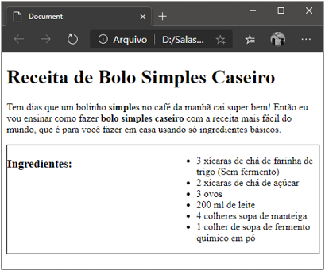

As caixas que envolvem um elemento pode ser de nível block ou inline.
Block (bloco): As caixas de nível bloco sempre se iniciam em uma nova linha e por padrão ocupam todo o espaço horizontal disponível.
Ex: <h1>, <blockquote>, <address>, <li>, <pre>, <p>, <nav>, <table>, etc.
Inline (linha): As caixas de linha se adaptam ao fluxo de texto que as envolve.
Ex: <code>, <span>, <a>, <strong>, <small>, <cite>, <label>, <button>, etc.
Posicionando elementos
Existem duas propriedades que nos permitem posicionar elementos: position e float.
position: Pode receber 4 valores:
Fluxo normal (static): É o modelo de posicionamento padrão. Nele os elementos de bloco passarão a iniciar em uma nova linha, empurrando os demais para baixo. Quando o parâmetro é relative, usamos outras 4 propriedades para configurar o posicionamento: top, bottomleft, e right.
position: static;
Posicionamento relativo: O elemento pode ser movido para cima, baixo, esquerda ou direita tendo como ponto de partida a sua posição no fluxo normal, sem afetar os elementos à sua volta.
p {
left: 25px;
position: relative;
top: 25px;
}
Posicionamento absoluto: O elemento é removido do fluxo normal e os elementos em volta se comportam como se não houvesse esse elemento reposicionado.
h3 {
right: 0;
position: absolute;
top: 0;
}
Posicionamento fixo: Essa é uma forma de posicionamento absoluto, mas o elemento não se move quando o usuário utiliza as barras de rolagem da janela do navegador.
h1 {
left: 25px;
position: fixed;
top: 25px;
}
float: É usado quando é necessário criar colunas. Usamos esta propriedade junto com os valores left e right.

https://www.devmedia.com.br/view/viewaula.php?idcomp=40900
Nesse modelo de posicionamento o elemento sai do fluxo normal e é posicionado totalmente a esquerda ou à direita do contêiner que o contém.
h1 {
float: right;
width: 200px;
}
Para criar um texto em duas colunas, basta mover um dos elementos para a direita e outro pra a esquerda.
Z-Index: A propriedade z-index trabalha com um eixo Z, responsável pelo cálculo e posicionamento da profundidade de algum elemento (determinar se o elemento estará mais próximo ou mais afastado da tela).
Por padrão, cada elemento recebe um Z-index incremental. O elemento que tem o maior Z-index é o que fica visível. Dessa forma, podemos trabalhar com sobreposição ou transição de elementos.
No exemplo abaixo, a caixa de cor verde irá se sobrepor às demais.
 Home
Home